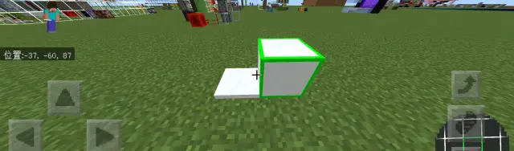
首先我们要知道标题里说的两种雪是什么，当然不可能是雪块（不开挂缝方块的情况下），所以理所当然的就是顶层雪也就是雪片以及粉雪了，问题不大
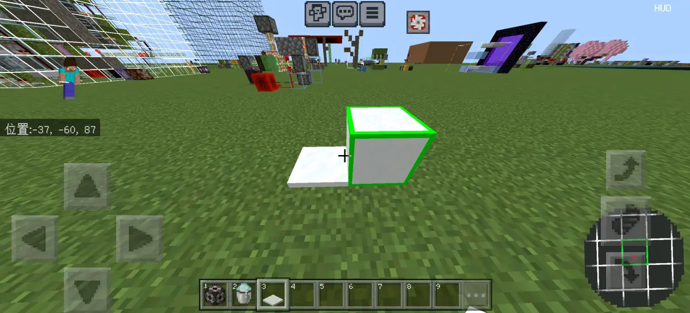
好吧，首先来讲一下比较熟悉的顶层雪吧，顶层雪本身1到8层，可以和部分植物进行重合，这个都知道，基本包括所有一格高并且没有碰撞箱的植物，但是不包括樱花竹笋以及树苗等特殊的一个高无碰撞箱植物
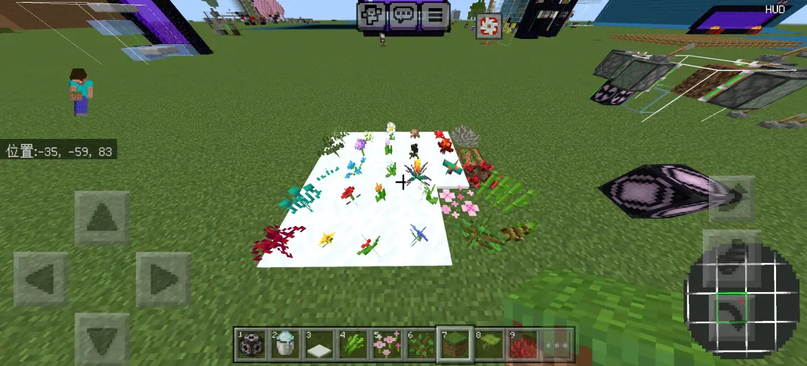
另外，所有两格高的植物以及本身有碰撞体积的植物，都不能和顶层雪兼容，不过这些并不是重点，重点是和顶层学兼容之后的方块具有何种性质？
首先，本身的碰撞体积改为等效于相应层数的雪片，这一点就不用说了，非常明显
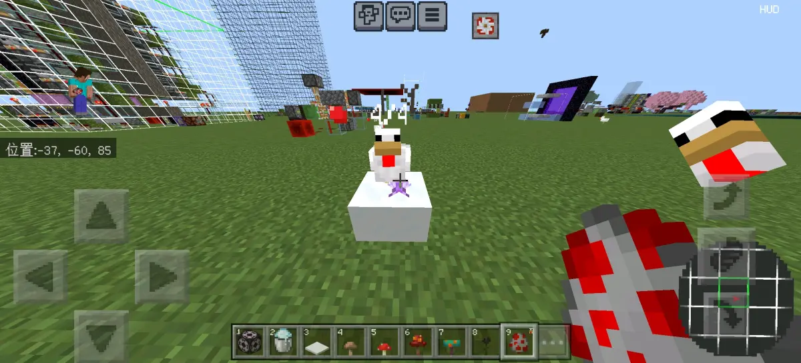
然后，那些本身没有什么特殊性质的就不说了，来讲一下几个有特殊性质的，也就是那四种蘑菇以及凋零玫瑰，首先是那个四种蘑菇，它们的性质很明显，都可以被骨粉催熟变成巨型蘑菇，但是在被覆盖雪片之后，骨粉无法选中，不管是用手还是发射器，甚至是蜜蜂，都无法选中
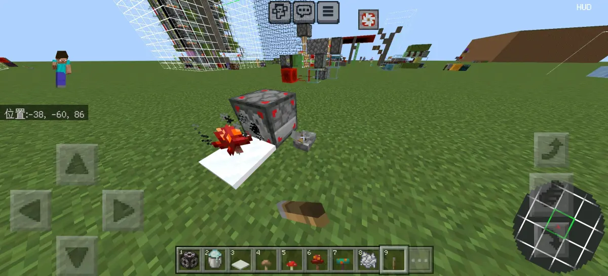
另外，普通的红色和棕色蘑菇，还有一个性质，就是可以蔓延，但是经过我们测试，随机刻4096的情况下，挂了半天也没有任何变化，把雪片打掉之后就恢复正常，因此，覆盖雪片的情况下也失去了蔓延的性质
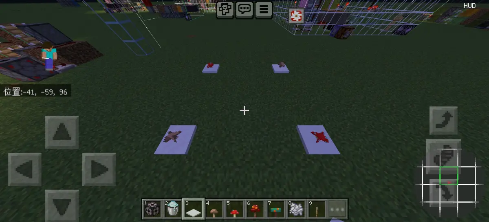
此外，除了这四种蘑菇之外，还有就是凋零玫瑰，凋零玫瑰的性质，想必都知道，首先就是会对上面的生物造成伤害，但是实际上，把雪片覆盖之后，你就会发现，直接没伤害了，不是和平，可以看到，左侧没有覆盖的有在受伤
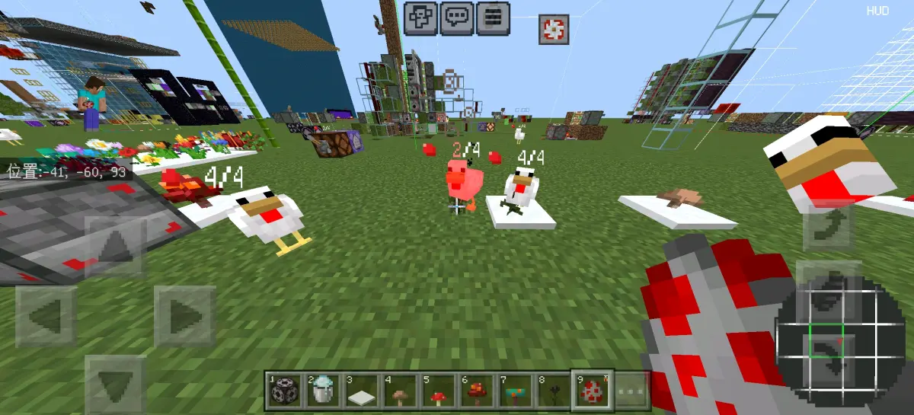
此外，凋零玫瑰还有一个性质，那就是生成筛选，常规情况下，除了僵尸猪人以及凋灵骷髅，其他生物都是无法生成在凋零玫瑰上方的，结构生成我们也测试过了，这里拿自然生成的岩浆怪举例，可以看到，常规情况下是不可能刷凋零玫瑰上的
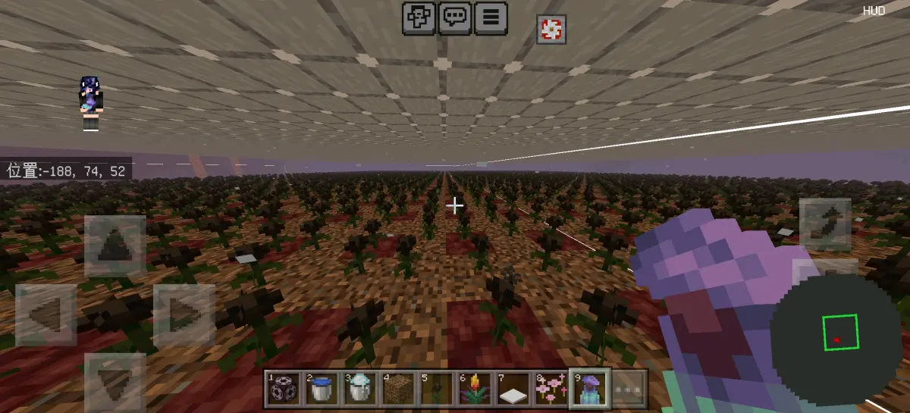
但是，假如我们把雪片给覆盖上，然后你就会发现，他妈的，居然刷出来了，相当于是说覆盖上雪片之后凋零玫瑰的生成筛选性质也没了
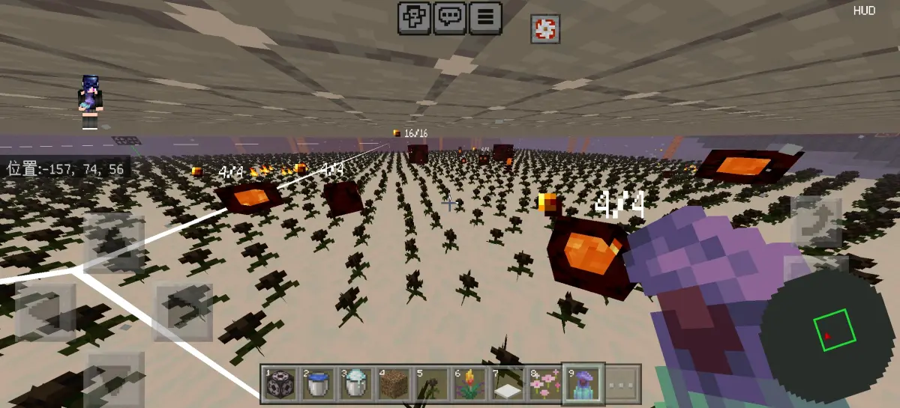
嗯，所以我们基本上就可以得出一个结论了，被顶层雪覆盖的方块，它们本身的性质也一同被顶层雪覆盖了，毕竟上面的四种蘑菇以及凋零玫瑰都失去了原本的性质，并且变为了雪片的性质就已经很能说明这一点了，如果你不相信，这里还有一个承上启下作用的例子
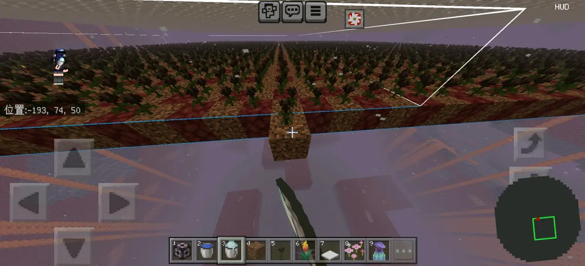
看到，常规状态下，粉雪是不能够直接替换掉像是凋零玫瑰这种植物的
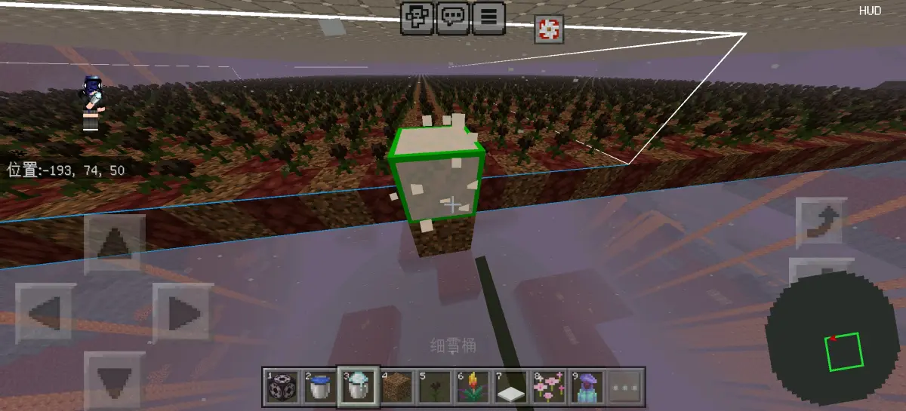
但是如果我们给凋零玫瑰覆盖上雪片，然后再次用粉雪点击，你就会发现，直接覆盖掉了，而且出现的粒子破坏效果是顶层雪的，而凋零玫瑰甚至都没有掉落物产生
另外就是凋灵的破坏，正常情况下，这些植物被破坏会有掉落物，但是可以看到，在覆盖雪片的情况下，这些植物本身掉落物就没了，只会产生顶层血被破坏的雪球
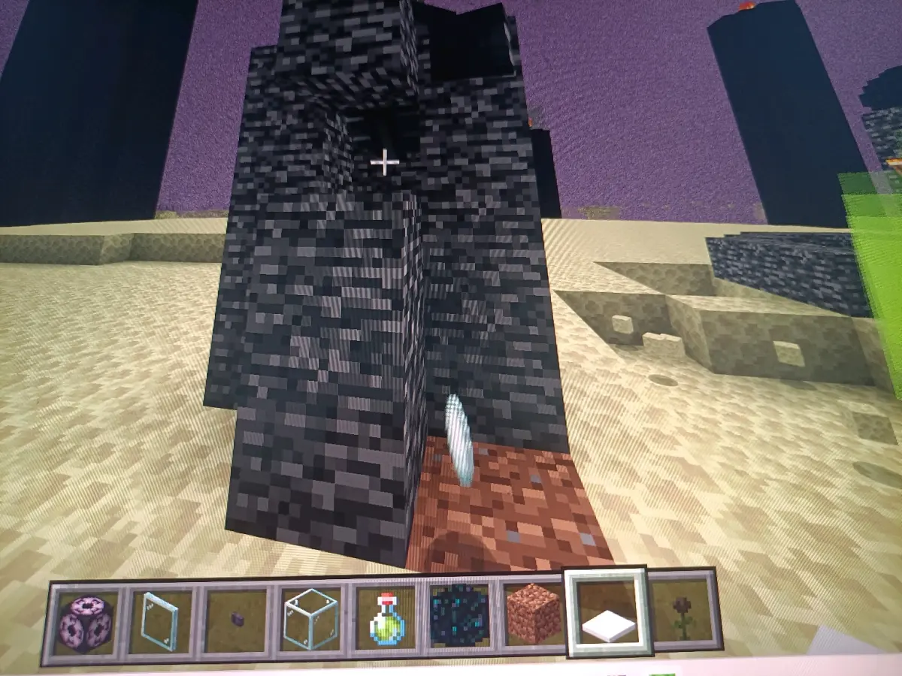
相信这些已经能够充分说明了，常规情况下含顶层雪的方块，本身性质就直接被顶层雪给替换了，碰撞体积不好说毕竟常规情况下，能含顶层雪的方块也都没有碰撞体积，但是其他的一些性质像是伤害催熟蔓延生成都直接被覆盖掉了，问题不大
然后接下来就是含粉血的方块了，这个相比上一个比较少，或者不如说这个比起上面那个刻意的设计来说更像是bug，总之先来看一下，能和粉雪共存的方块有哪些吧
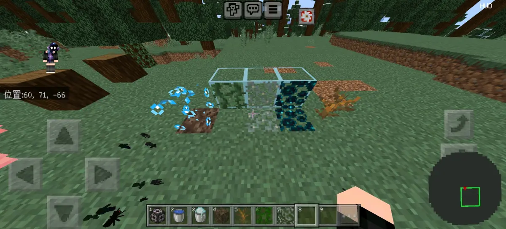
经过我们的测试，常规方块当中，能含的也就只有气泡柱，藤蔓，发光地衣，幽匿脉络以及枯死的灌木这五种方块，其中大家比较熟悉的应该就是气泡柱了，毕竟这个我们之前专门出过视频讲怎么做无水气泡柱，也确实是比较好用的，而且可以稳定存在，问题不大
但这些不是重点，我们来讲一下这些方块的性质，首先就是关于具体保留了什么方块的性质，根据我们的测试，实际上，这个更主要的是保留了被覆盖方块的性质，最明显的就是你打开边框显示，你对准这个发现实际显示的边框还是之前的方块
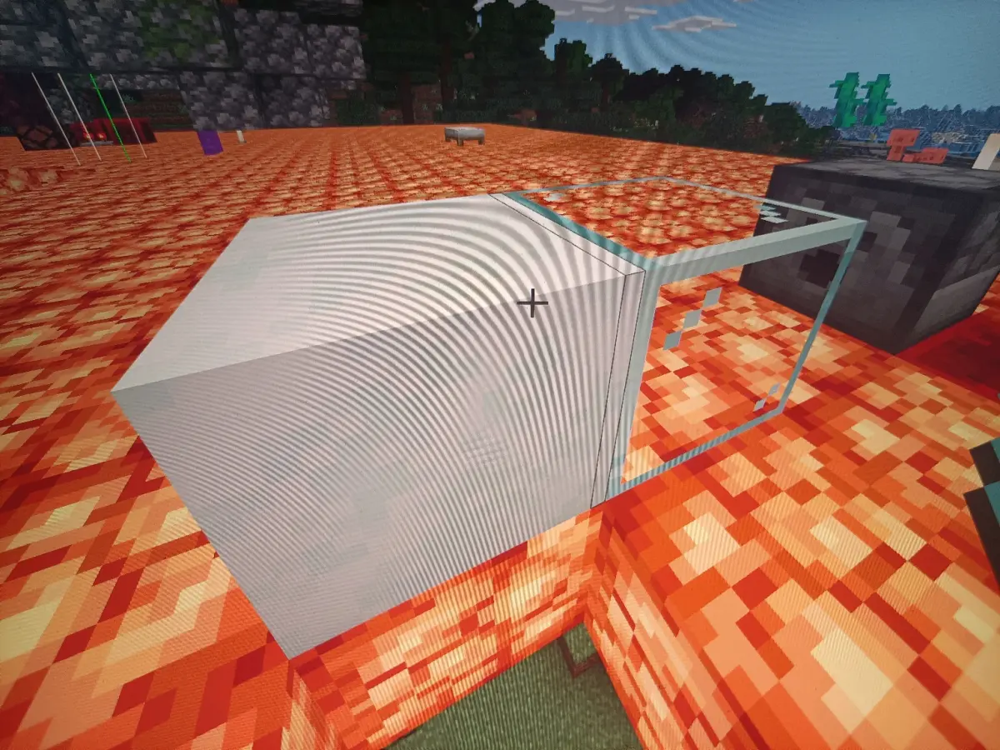
然后就是关于生成方面，我们都知道粉雪本身是一个限制类的非空气方块，但是看过我们之前视频的，应该都知道，我们用无水气泡柱，不管你是否用水把上面的粉雪冲掉，这个方块本身的性质都是气泡柱的真空气类完全不阻碍生成方块性质
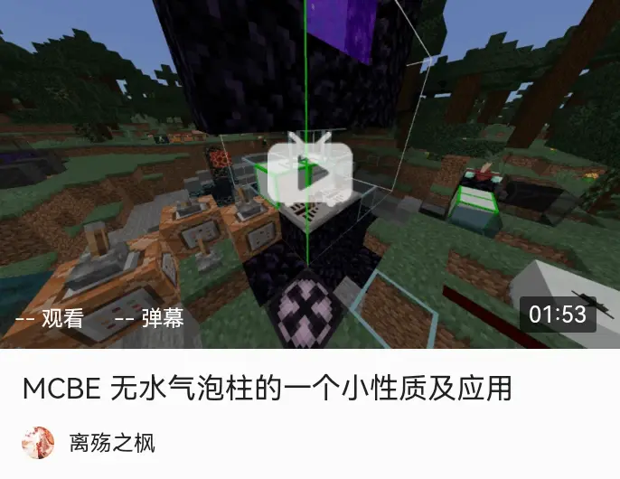
B 站视频 »以及另外几个本身是完全不阻碍的伪空气方块的方块，在和粉雪重合之后，依然是伪空气并且完全不阻碍方块的性质，并且的话本身不会对其中的生物提供冰冻效果
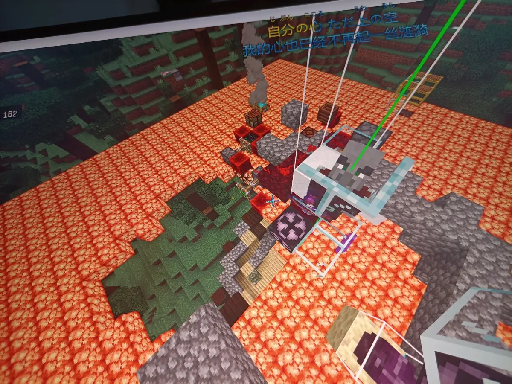
还有一个很明显的就是，这个方块不能缓解衰落伤害了，可以看到，直接摔死了
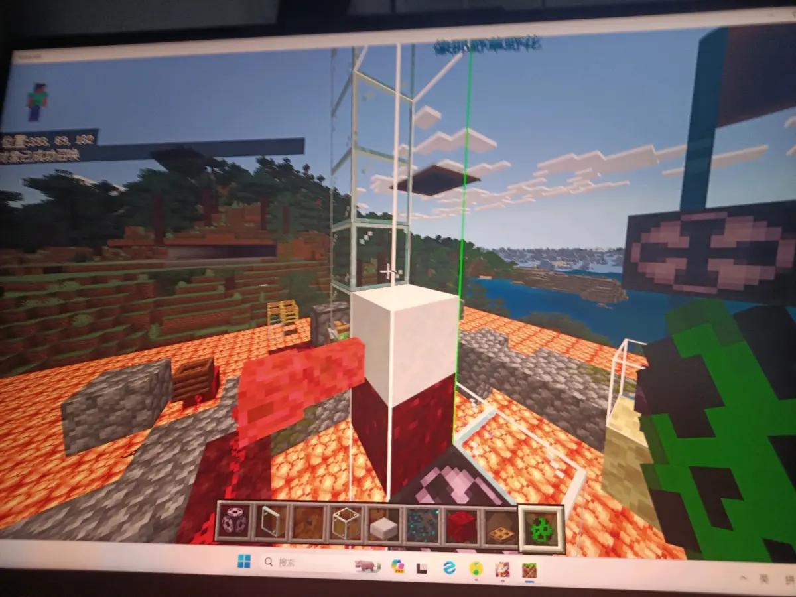
还有就是亮度以及对流体的抵抗力，可以看到，跟发光地衣重合之后，依然是发光地衣的亮度，并且水不能将其破坏
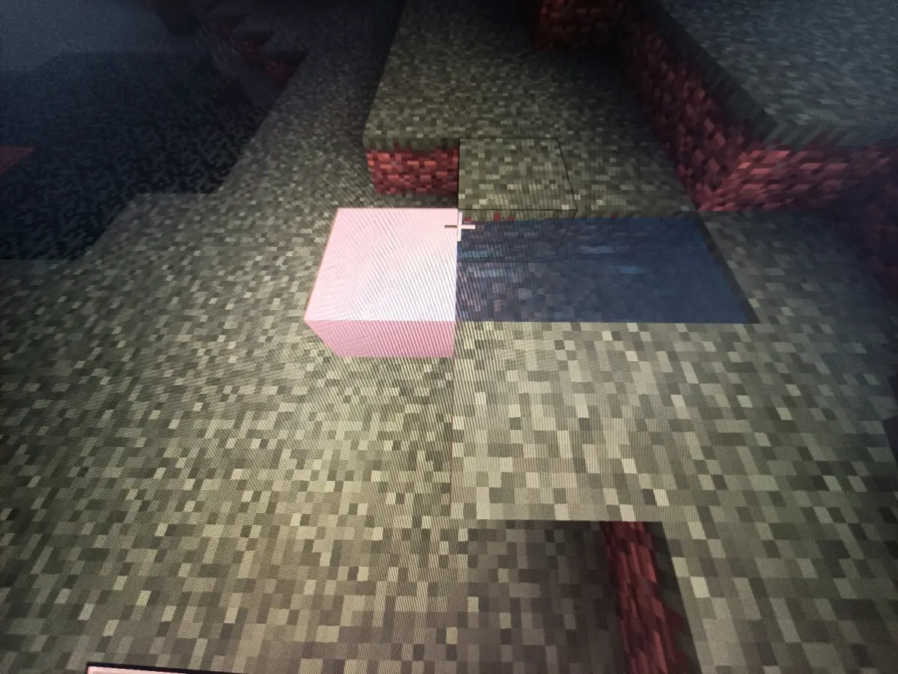
但是这也并不是代表粉雪完全失去了自身的性质，虽然常规状态下，也就是你直接进入当中，与粉雪重合的方块不会给予你冰冻效果，但是假如你携带着冰冻效果进入其中，也就是你先通过其他的粉雪获得了一个冰冻效果，在其还没有完全消失之前，进入这个与粉雪重合的方块，那么你就会发现，这个方块可以给予你冰冻效果，并且正常造成冰冻伤害
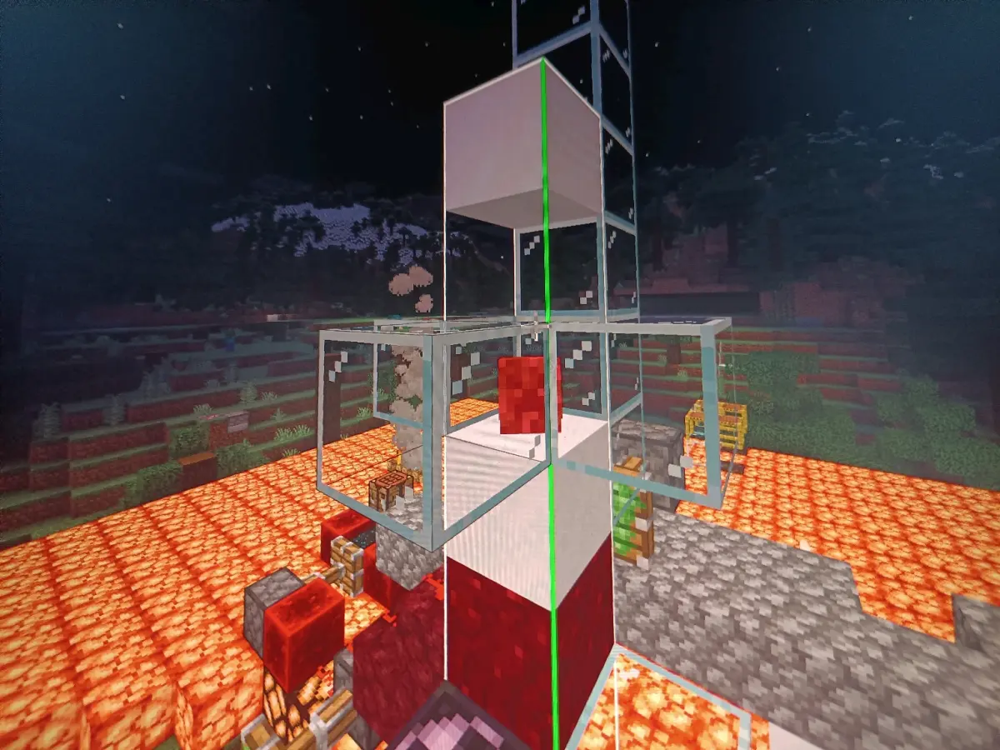
当然，就算你携带冰冻效果进入，也依然不能缓解你的摔落伤害，问题不大
另外，这个跟粉雪重合的方块还有一个和顶层雪重合的方块所没有的性质，那就是如果用指令将这个方块填充成空气（结构方块不行），或者是说你把它放在祭坛上本来是空气的位置然后重置祭坛
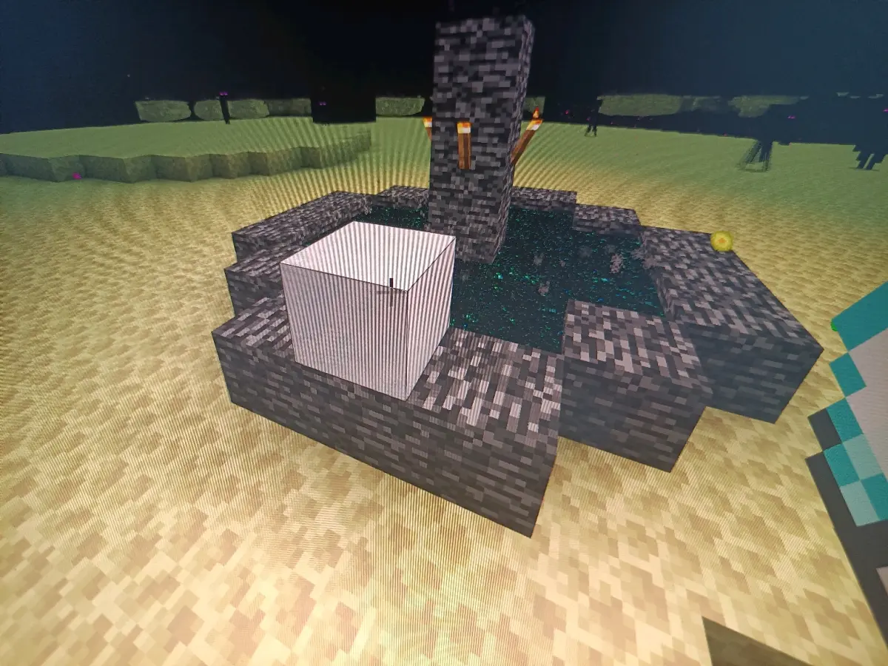
你就会发现一个很神奇的事，这个方块依然存在，不过实际上你再仔细看就会发现，与粉雪重合的那个方块，其实是被重置掉了的，留在原地的方块就是一个单纯的粉雪，当然是真实存在的，不是幽灵粉雪，也就相当于这个方块是可以抵抗一次空气重置的，重置完之后就变回普通的粉雪
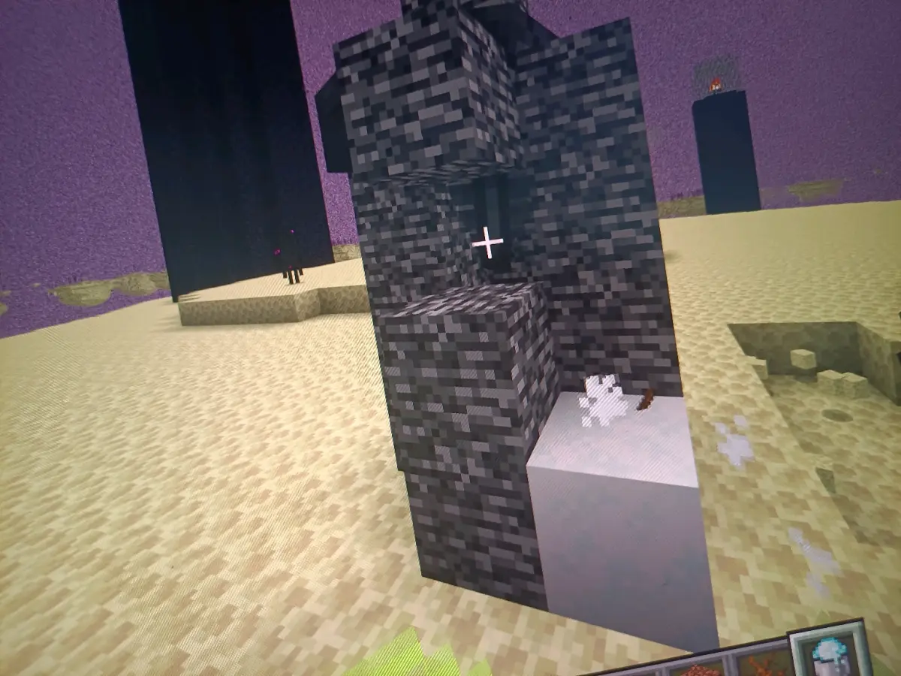
可以参考凋灵对含水方块的破坏，会优先破坏含水的方块，而不是水本身，这个方块也是，而且是会正常产生掉落物的，就算这里枯死的灌木就产生了木棍，问题不大
所以的话，我们大概就能够总结了，与粉雪重合的方块的性质，绝大部分都是以被覆盖的方块的性质为主导，粉雪本身只保留了很少一部分的性质，基本上可以说跟顶层雪是完全相反的，一个是以覆盖方块的性质为主导，另一个则是以被覆盖方块的性质为主导，而另外一个方块就基本上只保留了极小一部分的性质，大部分都是体现其中一个方块的性质，问题不大
行吧，那这个专栏差不多就到这里，虽然我们也不太知道这个专栏有什么太大意义吧，但是毕竟没人写的话，不如就由我们来补充完整也不错，而且至少其中有部分的性质比如无水气泡柱等对于实体农场方面还是有帮助的，希望能对大家有帮助吧，问题不大
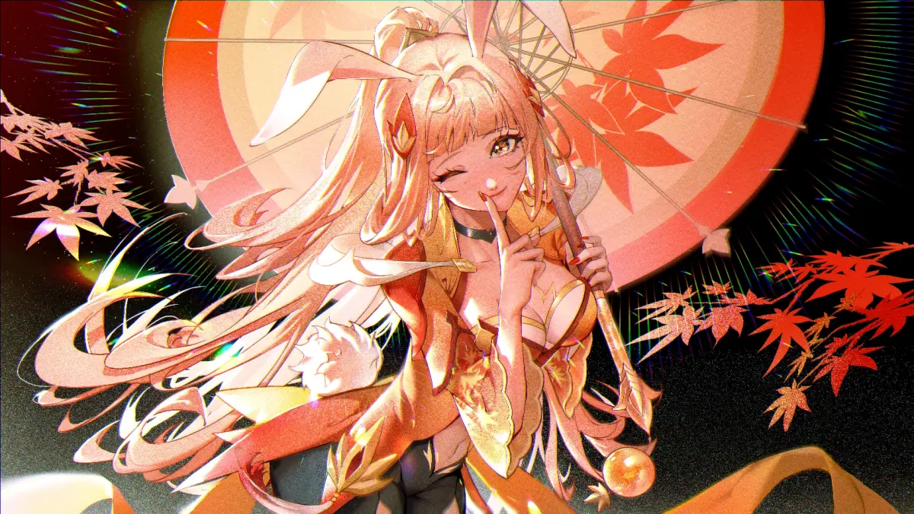